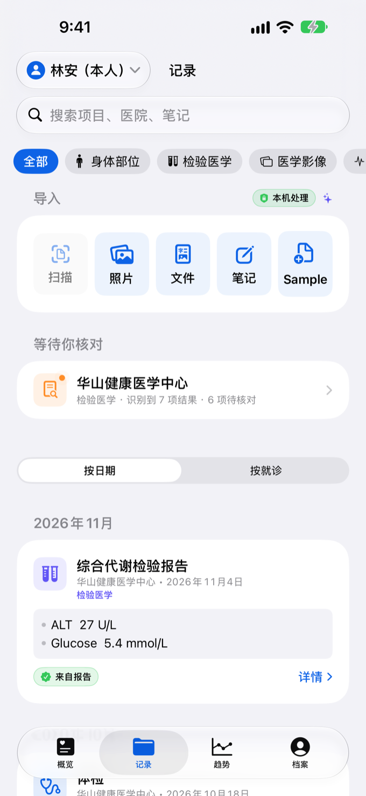
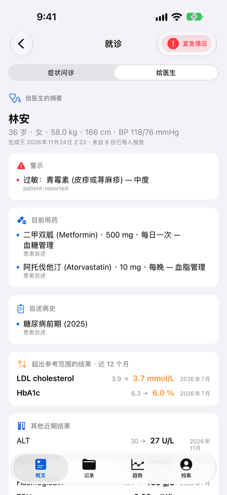

导入并核对报告
- 打开记录页面并点按 +，可通过相机扫描、选取照片、从「文件」导入 PDF/图片或手动添加笔记。
- 核对识别出的条目，点按待确认项即可放大查看对应的原图位置并按需修改。
- 确认后保存。多科室体检报告会整理为一个关联分组，并将总检结论置顶显示。
查看截图：浏览医疗记录


概览与趋势追踪
- 在概览页可快速查看近期关键指标、当前用药、过敏警示、待接种提醒及 Apple 健康摘要。
- 在趋势页可跨医院对比同一指标的历史变化；Med-X 会自动换算为你偏好的单位，并在曲线后方标注各份报告自带的参考范围。
- 需要表格备份时，可在趋势页右上角导出数据表格。
查看截图：查看检验趋势与参考范围

准备就诊与「给医生」摘要
- 在概览页点按准备就诊。
- 在症状记录中按引导梳理主要不适，并提前写下想向医生确认的问题；若出现紧急警示信号，应用会立即提示当地急救电话。
- 切换至给医生标签页查看清晰的一页交接摘要，可直接全屏手持给医生看，或导出打印为 PDF。
查看截图：准备就诊与医生摘要


家庭成员、用药与疫苗
- 点按左上角成员切换按钮即可新增或切换家庭成员，每位成员的数据相互独立。
- 在档案页填写过敏史、基础体征、既往诊断及重要安全信息。
- 在用药中维护在用药品，添加时若存在重复成分会自动提示。
- 在疫苗接种中拍摄接种本或手动记录剂次，并查看常规接种建议。
Apple 智能与端侧学习
- 在受支持的设备上，可前往设置 › Apple 智能开启或关闭辅助整理与病史摘要功能。
- 在设置 › 端侧学习中，可选择是否从你确认过的报告中学习版式和指标别名，也可随时点按忘掉所有学习内容重置。
Apple 健康、面容 ID 与删除数据
- 在设置 › Apple 健康中可为机主本人开启只读健康汇总；Med-X 不会向 Apple 健康写入数据。
- 在设置中开启需要面容 ID 后，退出应用将自动锁定。
- 删除的记录会先进入回收站方便恢复；如需彻底清空，可在设置中使用重置所有数据。
日志与反馈
- 前往设置 › 关于 › 日志与反馈，可直接调起邮箱向 contact@yhxue.com 反馈问题或建议。
- 发送前可自由选择是否附带脱敏 .mtxt 诊断日志和基础设备信息，并可先预览日志全文确认不含个人医疗内容。
- 你也可以随时单独导出或清除本地诊断日志。
常见问题
使用 Med-X 需要联网吗？ 不需要。扫描报告、查看趋势、生成就诊摘要与管理家庭成员均可离线在设备上完成。
Med-X 会给出医疗诊断吗？ 不会。Med-X 仅帮助你整理自己的医疗资料，请始终对照原始报告核对数字，并向专业医师咨询诊疗意见。
.mtxt 诊断日志里有什么？ 仅包含最近 7 天的脱敏运行事件、耗时和错误代码，不包含姓名、检验数值、诊断、药品、备注或识别出的报告文字。
如何获取帮助？ 在「设置 › 关于 › 日志与反馈」中提交，或发送邮件至 contact@yhxue.com。